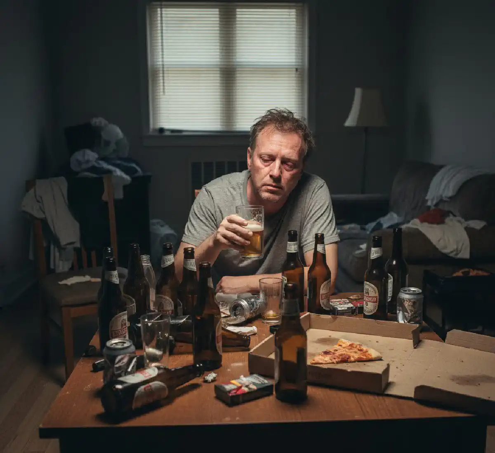

+38(068) 79 72 782
+38(068) 79 72 782Алкоголізм вихідного дня
Що якщо «відпочинок» стає проблемою?


Безкоштовна консультація, працюємо цілодобово 24/7
Що якщо «відпочинок» стає проблемою?
Алкоголізм вихідного дня — один із найнепомітніших, але небезпечних форматів формування алкогольної залежності. Багато хто вважає, що якщо випивають лише по п’ятницях, суботах чи під час сезонних свят, то це не проблема. «Я ж не п’ю щодня», — кажуть люди, які навіть не підозрюють, що їхня звичка вже давно перейшла межу звичайного відпочинку.
Насправді алкоголізм вихідного дня — це систематичне вживання великих доз алкоголю в короткі проміжки часу з метою розслаблення, зняття стресу та «перезавантаження». Це явище входить до групи епізодичного, але інтенсивного пияцтва, яке повільно, але впевнено руйнує здоров’я, психіку, стосунки та соціальне життя людини.
Термін позначає стійку звичку випивати у конкретні дні тижня, найчастіше — у вихідні. Людина може триматися в будні, виконувати обов’язки, працювати, навчатися, займатися сім’єю, але щойно настає п’ятниця — вмикається внутрішній «дозвільний механізм». Ознаки алкоголізму вихідного дня:
Багато хто навіть не вважає це залежністю, але епізодичне зловживання (понад 5–6 стандартних доз за вечір) — це вже запій епізодичного типу, який чинить руйнівний вплив на організм не менший, ніж щоденне вживання.
На перший погляд може здатися, що рідкісне вживання алкоголю — безпечніше, ніж щоденне. Багато хто щиро переконаний, що якщо людина п’є лише по п’ятницях чи суботах, то залежності бути не може. Насправді все навпаки: саме «епізодичний» формат, коли великі дози випиваються за короткий час, вважається одним із найнебезпечніших. Він формує залежність так само швидко, а іноді навіть швидше, ніж регулярне вживання невеликих доз. Розвиток алкоголізму вихідного дня пояснюється низкою фізіологічних і психологічних механізмів:
Так формується цикл: стрес → алкоголь → похмілля → емоційна яма → бажання розслабитися → алкоголь.
Хоча епізодичне пияцтво може торкнутися будь‑якої людини, сучасна статистика показує: є певні групи, у яких ризик формування «вихідної залежності» значно вищий. Це пов’язано зі способом життя, рівнем стресу, психологічними особливостями та соціальним оточенням. Нижче — категорії, в яких алкоголізм вихідного дня зустрічається найчастіше.
Усі перелічені групи об’єднує одне: високий рівень стресу + нестача здорових механізмів відновлення. Коли людина чекає вихідних як єдиної можливості розслабитися, алкоголь стає центральною частиною цього ритуалу. І залежність починає формуватися значно швидше.
Алкоголізм вихідного дня формується поступово й майже непомітно. Людина залишається соціально активною, ходить на роботу, виконує обов’язки, тому довго переконує себе, що проблеми немає. Однак залежність розвивається за своїми законами — і невдовзі з’являються характерні симптоми, які складно ігнорувати.
Багато хто помилково вважає, що якщо пити лише у вихідні, серйозної шкоди здоров’ю не буде. Насправді «п’ятнично‑суботнє» вживання завдає організму ударного навантаження, порівнянного зі щоденним пияцтвом. Алкоголь за короткий проміжок часу надходить у великих кількостях — саме тому епізодичний алкоголізм руйнує здоров’я не менш активно, а іноді й швидше. Нижче — ключові небезпеки, про які важливо знати кожному, хто вважає вживання у вихідні «невинним відпочинком».
1. Токсичне ураження печінки. Печінка — головний орган детоксикації, і саме вона приймає на себе перший удар. Коли людина випиває багато за один вечір, печінка змушена переробляти токсичні продукти розпаду в екстремальному режимі. Наслідки можуть накопичуватися роками, не даючи яскравої симптоматики: жирова дистрофія печінки (стеатоз) — перша стадія алкогольного ураження, алкогольний гепатит — запалення органа, що супроводжується болем і слабкістю, фіброз і цироз — незворотні зміни, що загрожують життю. Парадоксально, але епізодичне вживання великими дозами ушкоджує печінку не менше, ніж «малі дози щодня».
2. Кардіологічні ризики. Серце й судини реагують на великі дози алкоголю миттєво. Кожен «святковий вечір» збільшує ризик: аритмії, особливо фібриляції передсердь, гіпертонічного кризу, інфаркту міокарда, раптової серцевої смерті, особливо після інтенсивного пиття у чоловіків 30–50 років. Недарма термін «holiday heart syndrome» (синдром святкового серця) використовується кардіологами для опису порушень ритму, що виникають після бурхливих вихідних.
3. Алкогольна депресія та емоційні провали. Після «веселого» вечора майже завжди настає хімічно зумовлений спад. Алкоголь руйнує баланс нейромедіаторів, тому вранці людина стикається з: тривожністю, апатією, відчуттям порожнечі, дратівливістю, стійким зниженням настрою. Якщо такі «гойдалки» відбуваються щотижня, формується алкогольна депресія, що потребує професійного лікування.
4. Неврологічні порушення. Алкоголь вихідного дня — це токсичний удар по центральній нервовій системі. У результаті поступово розвиваються: погіршення концентрації та неможливість зібратися після вихідних, провали в пам’яті, особливо епізоди «блекауту», зниження когнітивної ефективності на роботі, підвищена агресивність чи дратівливість. Мозок особливо чутливий до епізодичних перевантажень, тому шкода проявляється швидше, ніж здається.
5. Проблеми в сім’ї та соціальні конфлікти. Навіть якщо людина п’є раз на тиждень, оточення відчуває наслідки: вихідні перетворюються на «день відновлення» замість спільного відпочинку, зростає кількість сварок і непорозумінь, діти бачать батька чи матір у поганому стані, партнер відчуває емоційну самотність. У результаті погіршується мікроклімат сім’ї, довіра слабшає, а стосунки стають напруженими або руйнуються.
6. Перехід до короткочасних або регулярних запоїв. Алкоголізм вихідного дня рідко залишається на одному рівні. У моменти сильного стресу чи емоційного вигорання людина може «зірватися» на: дво‑ чи триденні запої, що збігаються з вихідними, вживання у будні, якщо не вдалося «розслабитися як хотілося», компенсацію стресу алкоголем після будь‑якої напруженої події. Так епізодичний алкоголізм плавно переходить у хронічну форму.
Є прості, але дуже точні маркери:
Якщо збігаються 2–3 пункти — це вже привід замислитися. Якщо більше п’яти — потрібна професійна допомога нарколога.
Лікування алкоголізму вихідного дня — це багатоетапний процес, спрямований не лише на усунення фізичних наслідків вживання, а й на корекцію психологічних причин, які формують звичку «розслаблятися» спиртним у п’ятницю. Попри уявну легкість проблеми, епізодичне пияцтво потребує професійного підходу: воно швидко прогресує, призводить до запоїв і формує стійку залежність.
1. Виведення зі стану похмілля або міні‑запою. У більшості випадків пацієнти звертаються до лікаря після тяжкого похмілля, «перебору» напередодні чи дводенної вечірки. Професійне виведення з похмілля дозволяє швидко полегшити стан, запобігти ускладненням і створити основу для подальшого лікування.
2. Психотерапія — ключ до формування здорової поведінки. Лікування алкоголізму вихідного дня неможливе без роботи з психологічними причинами. Саме вони провокують регулярне бажання «зняти напруження» за допомогою алкоголю. Навіть кілька сеансів із наркологом‑психотерапевтом часто дають виражений результат: людина вперше за довгий час відчуває, що здатна відпочивати без алкоголю.
3. Медикаментозна підтримка — вирівнювання емоційного фону та зниження потягу. За призначенням лікаря можуть застосовуватися препарати, які:
Медикаментозний супровід особливо важливий на перших етапах лікування, коли звичка пити «раз на тиждень» ще сильна.
4. Кодування від алкоголю (за бажанням пацієнта). Кодування не є обов’язковим, але часто допомагає людям, які бояться «зірватися» на чергову пиятику. Кодування допомагає надовго закріпити тверезу поведінку та зменшує ймовірність «алкогольних вихідних».
Алкоголізм вихідного дня здається безпечним: людина переконує себе, що п’є «рідко», «як усі», «просто знімає напруження». Але саме ця ілюзія контролю робить проблему небезпечною. Більшість людей, які намагаються впоратися самостійно, стикаються з одними й тими ж труднощами. Важливо зрозуміти: звернення до нарколога — це не визнання слабкості, а зріле й відповідальне рішення. Саме так людина робить крок до здорового життя, вільного від залежності.
Важливо розуміти: залежність формується не лише фізіологічно, а й емоційно. Коли людина відчуває, що алкоголь — єдиний спосіб «відключитися», мозок закріплює цю поведінку. Поступово формується:
Тому лікування завжди включає роботу з мисленням, моделями поведінки, емоційними реакціями.
Особливо небезпечний серед молодих людей віком 18–30 років — студентів, молодих співробітників компаній, стажерів та тих, хто лише починає будувати кар’єру. У цієї групи є низка особливостей, які прискорюють розвиток залежності:
Важливо розуміти, що алкоголь на вихідних у молоді часто сприймається як розвага, а не як небезпека. Це робить профілактику та раннє втручання критично важливими.
У дорослих людей ситуація виглядає інакше: алкоголь вихідного дня часто маскується під «соціально прийнятну поведінку». Людина: працює, забезпечує сім’ю, підтримує соціальні зв’язки, зовні здається успішною та врівноваженою. Але при цьому алкоголізм вихідного дня непомітно руйнує здоров’я і психіку:
Дорослі часто недооцінюють небезпеку, думаючи: «Я ж не п’ю щодня». Але саме це робить епізодичний алкоголізм прихованою загрозою.
Перехід до здорових, тверезих вихідних — це не одномоментне рішення, а процес, який потребує усвідомленості, чесності із самим собою та підтримки. Але цей шлях реальний для кожної людини. Ключові кроки:
Визнати проблему. Це найважливіший і найскладніший етап. Визнання не означає слабкість — воно свідчить про зрілість і готовність взяти відповідальність за своє життя. Алкоголізм вихідного дня майже завжди є наслідком внутрішніх проблем, про які людина часто навіть не замислюється.
Звернутися по професійну допомогу. Це значно прискорює процес і знижує ризик повернення до залежної поведінки. Самостійно пройти весь шлях украй складно, а з підтримкою спеціаліста — реально, безпечно й набагато швидше.
Сформувати нові, здорові ритуали. Щоб вихідні перестали асоціюватися з алкоголем, потрібно створити альтернативні способи відпочинку. Уже через кілька тижнів мозок починає формувати нові асоціації: «вихідні = задоволення, а не алкоголь». Саме так народжується тверезе й повноцінне життя.
Алкоголізм вихідного дня — це не просто «традиція розслабитися у п’ятницю» і не безпечне хобі. Це прихована форма залежності, яка розвивається непомітно: спочатку кілька бокалів, потім «трохи більше», далі — необхідність випивати щотижня, втрата контролю, тяжкі похмілля та погіршення психоемоційного стану. Ця форма алкоголізму небезпечна тим, що людина довго не визнає проблему. Вона працює, виконує обов’язки, але внутрішньо все глибше занурюється у залежність. Знижується стресостійкість, зростає дратівливість, концентрація уваги падає, а вихідні перетворюються на низку «переборів», обіцянок «наступного разу не пити» і нових зривів.
Професійну, анонімну та безпечну допомогу надає наркологічна служба UmbrellaPlus. Тут працюють досвідчені лікарі‑наркологи, психотерапевти та спеціалісти з реабілітації, які допоможуть пройти весь шлях — від детоксикації до повного відновлення. UmbrellaPlus — цілодобова допомога при алкоголізмі.
Телефон для запису та консультацій: +38(050-021-69-57)
Номер телефону:
+380 (68) 797 27 82
+380 (50) 021 69 57
Адресу наркологічного центра вашого міста
уточнюйте за телефоном
Працюємо: Київ, Одеса, Львів, Харків, Дніпро,
Запоріжжя, Черкасах, Чугуєві, Чорноморську, Кам'янському
Telegram: t.me/umbrellaplus
Графік работы: Цілодобово